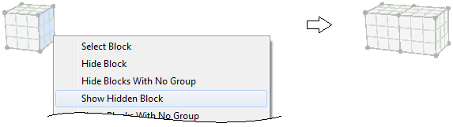

显示块体
以下工具按钮用于显示块体。
| 图标 | 工具按钮 | 说明/注释 |
|---|---|---|
 |
仅显示所选块体 | 选中一个或多个块体后，单击此工具即可隐藏所有未选中的块体。 |
 |
显示所有块体 | 单击此按钮可使所有块体可见。 |
 |
显示坏块 | 如果模型中存在任何无效块体，此按钮将变为可用。单击它将隐藏足够多的良好块体，以便您看到可能埋藏在模型内部的坏块。 |
当您右键单击属于隐藏块体的面时，上下文菜单中将有一个名为“显示隐藏块体”的命令，该命令将使隐藏的块体可见。


分组
- 上下文菜单中有按分组显示的命令。当您右键单击具有隐藏块体的面时，上下文菜单中将包含以下两个命令之一。
- 如果隐藏的块体已指定分组，则该命令为“显示隐藏分组：<name>”，其中 <name> 会替换为指定给该隐藏块体的分组名称。该命令将显示所有指定了该分组名称的块体。
- 如果隐藏的块体未指定分组，则该命令为“显示未指定分组的块体”，它将显示所有未指定分组名称的块体。
当您右键单击已指定分组的块体时，上下文菜单中将有一个名为“选择分组中的块体：<name>”的命令，其中 <name> 会替换为实际的分组名称。该命令将首先显示所有指定了该分组的块体，然后选中所有这些块体。
高亮显示的分组
高亮分组工具按钮（ ）下有一个名为“仅显示高亮显示的块体”的菜单命令。该命令将使处于高亮分组中的所有块体可见，并隐藏未高亮分组中的所有块体。
）下有一个名为“仅显示高亮显示的块体”的菜单命令。该命令将使处于高亮分组中的所有块体可见，并隐藏未高亮分组中的所有块体。
| 这些内容对您有帮助吗？… | FLAC3D © 2019, Itasca | 原文更新于 2020 年 10 月 8 日 |